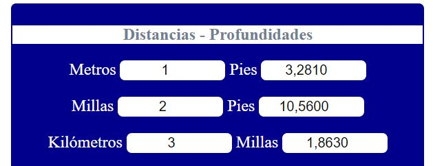
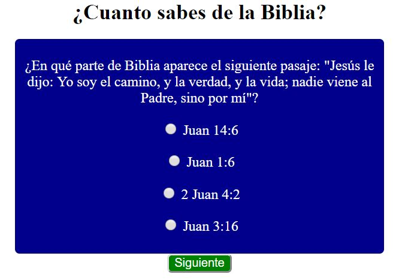
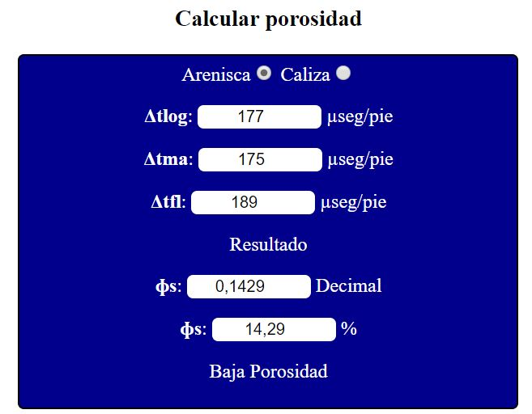
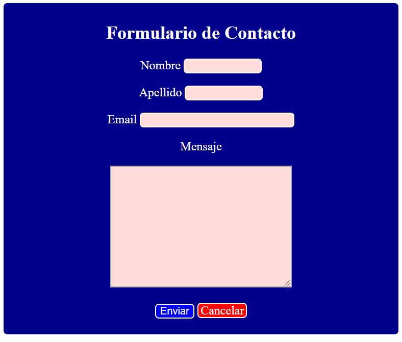
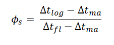

Esta evaluación final integradora constará de 4 secciones diferentes:
Esta es una imagen de la tabla de conversiones:
Esta es una imagen del cuestionario:
Esta es una imagen de la calculadora de porosidad:
Esta es una imagen del formulario de contacto:
Estas son las conversiones mas comunes usadas en la industria petrolera.
La tabla de conversiones cuenta con unidades de distancia o profundidades, de área, y de volumen.
| Conversiones mas comunes en la industria petrolera | ||
|---|---|---|
| Para convertir | Multiplica por | |
| De | A | |
| Distancias - Profundidades | ||
| Metros | Pies | 3.281 |
| Millas | Pies | 5.280 |
| Kilómetros | Millas | 0.621 |
| Áreas | ||
| Acres | Pies² | 43.560 |
| Acres | Metros² | 4.047 |
| Millas² | Kilómetros² | 2.590 |
| Kilómetros² | Acres | 247.1 |
| Volúmenes | ||
| Acres-Pies | Barriles | 7,758.4 |
| Barriles | Pies³ | 5.615 |
| Metros³ | Barriles | 6.291 |
| Barriles | Galones | 42 |
| Toneladas Métricas | Barriles | 7.3 |
| Metros³ | Pies³ | 35.320 |
| Presiones | ||
| PSIA | KPA | 6.895 |
| BAR | PSIA | 14.504 |
| BTU | JOULE | 1,054.6 |
Simplemente expande las pestañas que quieras usar e insertar números, los cuales serán convertidos de manera automática en la unidad correspondiente.
Esto es un cuestionario acerca de la Biblia.
El cálculo de porosidad a partir del registro sónico, se puede realizar a partir de la ecuación de promedio de tiempos de Wyllie (Wyllie et al., 1958), la cual se expresa de la siguiente manera:
Donde:
La calidad de la porosidad de una roca es determinada según el tipo de litología. Para areniscas y carbonatos los rangos de porosidades se definen de la siguiente manera:
| Porosidad | ||
|---|---|---|
| Calidad | Areniscas | Carbonatos |
| Baja | < 20 % | < 4 % |
| Buena | 20 - 30 % | 4 - 8 % |
| Alta | > 30 % | > 8 % |